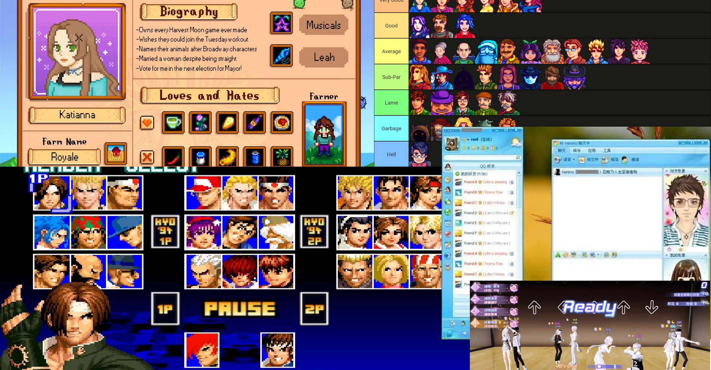
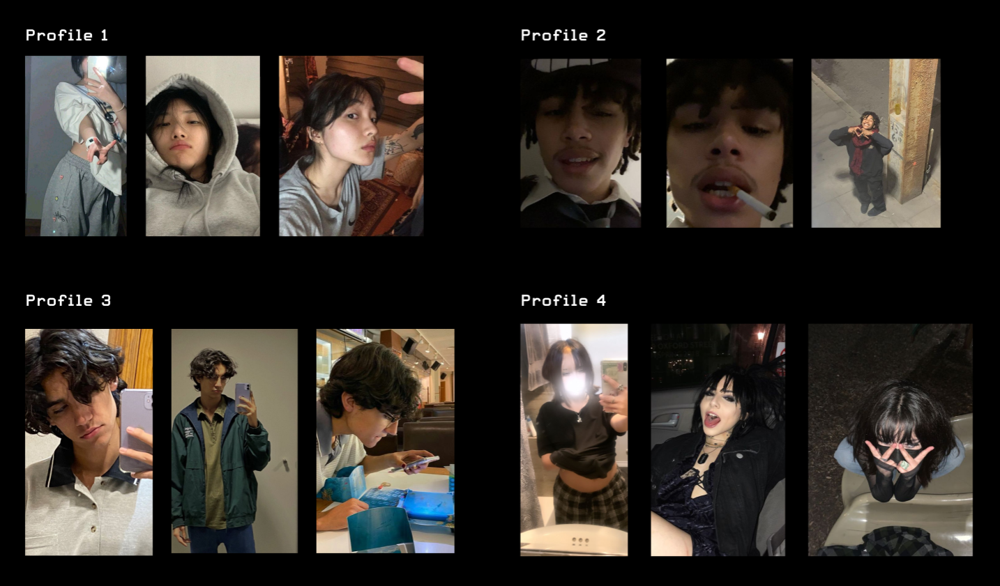
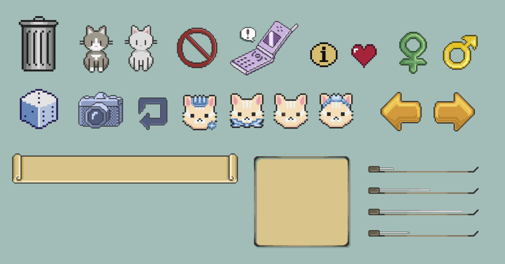
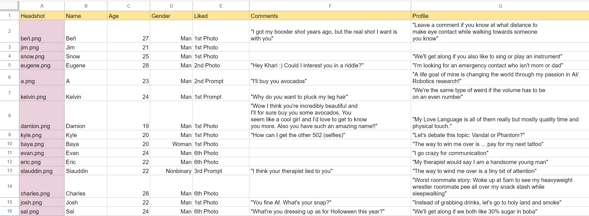

Inspired by the prevalent perception of dating apps as 'games,' particularly evident in the act of swiping profiles, I designed the website's aesthetic with elements reminiscent of 8-bit/pixel art games to authentically capture this shared experience
Inspiration Moodboard

I hosted all four profiles on the dating app, Hinge. This app allows you to add images as well as short written prompts about yourself and interests. I decided to keep all the written information/prompts for each profile the same albeit slight wording changes and different names. I deliberately chose to make each profile a different race and gender to observe biases in these categories.
Variety of fake profiles

To capture a consistent theme across the pages on the site, I created pixel art illustrations for the different UI elements.
Pixel art assets I created :]

To capture the basic information of each match on the app, I recorded the image of their face, name, age, and geneder. Additionally, I captured their interaction with the fake profile by recording which photo/prompt they responded to and any comments they left when matching.
Inputted all 535 data entries into JSON format
